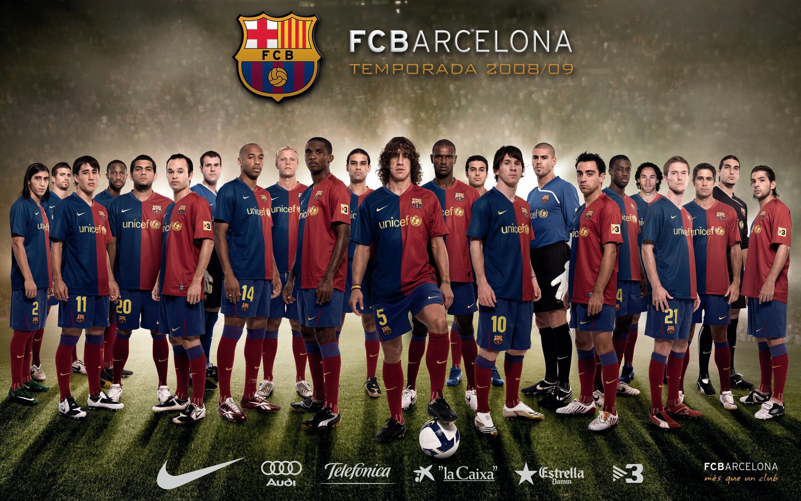

- The team was founded in 1899
- 1899–1922: Beginnings
- 1923–1957: Rivera, Republic and Civil War
- 1957–1978: Club de Fútbol Barcelona
- 1978–2000: Núñez and stabilization
- 2000–2008: Exit Núñez, enter Laporta
- 2008–2012: Guardiola era
- 2014–2020: Bartomeu era